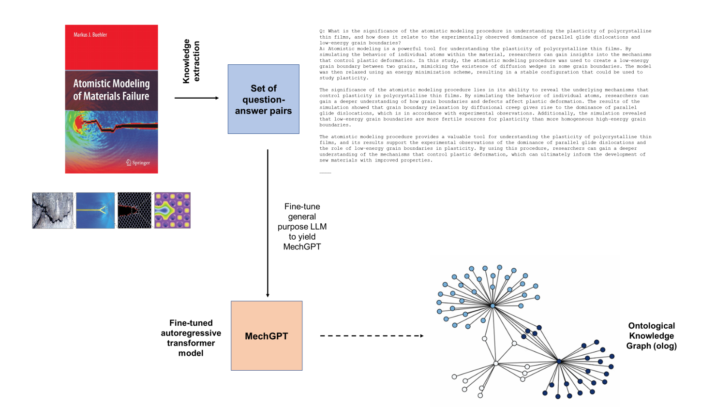
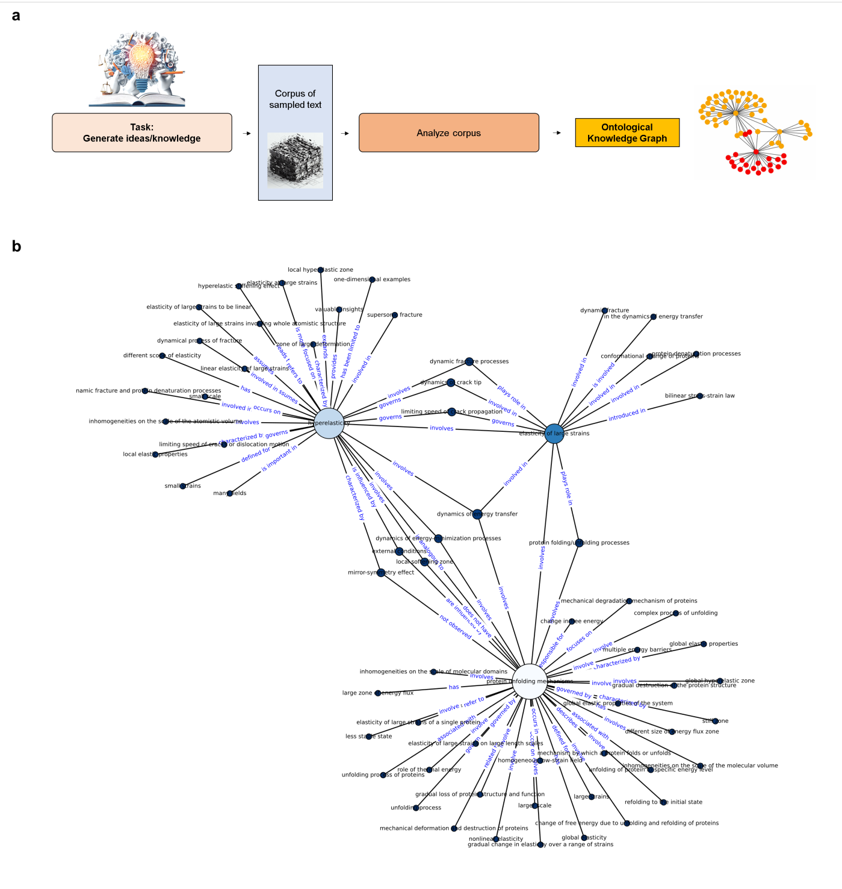
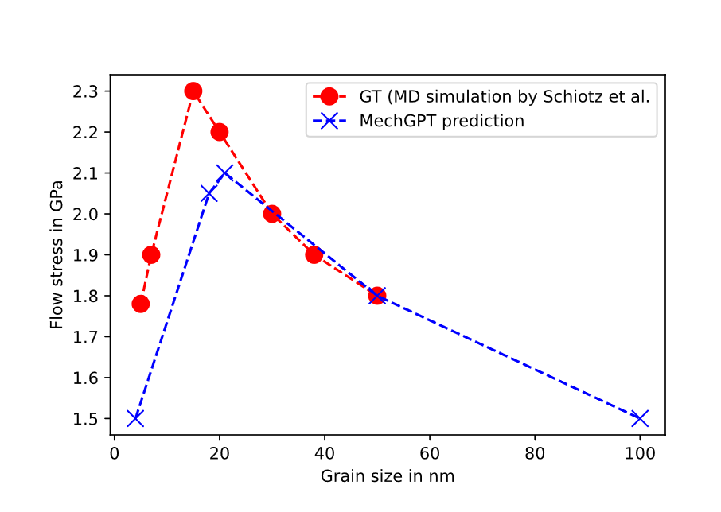

MechGPT — Mechanics and Materials
论文笔记: MechGPT — Mechanics and Materials
MechGPT 最值得借鉴的是把材料教材变成可交互、可组合知识的工作流。论文展示了领域问答、跨域类比和工具协作的可行性，但对定量预测、微调增益和“理解了物理”的证明仍然有限。
读完应记住四件事：
- 核心是教材问答蒸馏与 LoRA 微调。 为处理 PDF 公式乱码，作者主动从训练答案中删除数学表达；这项清洗选择也限制了所保留的科学信息。
- 专门知识的正例与不稳定性同时存在。 MechGPT 在超弹性问题上有优于当时 GPT-4 的案例，但自己也会随题目改写而答反。
- 知识图谱是对文本关系的外部整理。 构图、图检索回答和图像分析借助其他模型；不能把整套系统的表现都归给微调后的 MechGPT。
- 最需要补的是受控评测。 少量预测点和长对话支持能力探索，尚不足以排除基座能力、上下文提示和外部工具的贡献。
1. 背景信息
- 完整题名：MechGPT, a language-based strategy for mechanics and materials modeling that connects knowledge across scales, disciplines and modalities。
- 作者与团队：Markus J. Buehler；MIT 的 Laboratory for Atomistic and Molecular Mechanics，以及 Center for Computational Science and Engineering。
- 版本：arXiv v1 发布于 2023-10-16；后发表于 Applied Mechanics Reviews，2024，76(2): 021001，DOI：10.1115/1.4063843。出版信息由 MIT 官方馆藏核对。
- 材料边界：本笔记基于 arXiv v1 PDF 的正文、全部主表、关键补充表与原图；页码均指该 82 页 PDF。期刊终稿下载未成功，因此不声称已核对终稿改动；未重跑训练、模型推理或仿真，未观看演示视频。论文提供的代码、模型与数据入口未做实现审计。
2. 关键问题：会讲断裂力学，是否就能正确调用专门知识？
Golden Case：材料发生超弹性软化或硬化，哪一种更可能对应超声速裂纹传播？ 这是 Table 1 与 Table S9 中的真实对照题。作者希望模型识别教材中特定的超弹性效应，选择“硬化”。
Table S9 中，当时通过 ChatGPT 访问的 GPT-4 选择“软化”：它把“变得更容易变形”推成“更容易快速断裂”。这段解释读起来顺畅，却被作者标为错误。Table 1 中，13B MechGPT 对相同选择题答“硬化”。这提供了一个具体动机：通用模型的常识式推理可能覆盖不了专门材料机制，领域数据有机会纠正这种回答。 这里的正确性口径来自论文，不能把某一题的选项扩展成对所有材料和加载条件成立的定律。
但同一张 Table 1 也暴露了问题：问“在大变形时弹性软化的脆性材料中，裂纹会怎样运动”，模型答“亚声速”；换成直接使用“hyperelastically softening materials”的表述，模型却答“超声速”，作者明确标注为错误（pp. 42–43）。因此，这篇真正值得追问的是：教材内容进入模型之后，形成的是稳定、可迁移的知识，还是容易受措辞影响的回答倾向？
作者还想进一步把裂纹问题与蛋白质展开联系起来。两者都涉及变形、能量和结构变化，但把概念并列出来只是起点；需要解释关系如何产生，以及哪些关系真的有物理意义。
3. 关键方法：先教会领域表达，再把生成内容组织成可查询的关系
3.1 沿着裂纹案例走完“训练—回答—连接”
教材中的断裂知识 → 清洗后的问答 → LoRA 微调 → 裂纹问答与跨域类比 → 文本三元组 → 图谱辅助生成研究假设。 这里有训练参数的阶段，也有只改变输入上下文的阶段。
第一步，把教材变成独立问答。 作者使用自己的 Atomistic Modeling of Materials Failure，将 PDF 提取的文本分成约 500 词一段，约 430 段。Llama 2 70B chat 先根据每段生成一个问题，再结合问题概括该段；重复三次，得到约 1,290 对问答（§2.1，pp. 2–3）。这些是同一本书的重复采样，不能视为同等数量的独立知识来源。
为什么不直接拿 PDF 文本训练？原始抽取混有页码、图注、断词和损坏的公式。问答化同时承担格式清理、内容选择和指令化的作用。决定行为的提示片段是：
“Never include math, equations, variables and numbers in the response.”
这句话来自 §4.1（p. 23），作用是避免把坏掉的数学表达写进训练答案。代价是模型看到更多概念性解释，较少保留公式、数值与适用条件之间的精确联系。 后半句是我的判断；论文没有用保留数学信息的训练集做消融来检验它。
第二步，冻结基座，训练低秩增量。 13B 版本以 OpenOrca-Platypus2-13B 为基础，采用 LoRA 与 4-bit NF4 量化，目标仍是问答文本的自回归下一 token 预测。更新的是适配器参数；量化主要降低存储成本。这里没有新增物理方程求解器，也没有把守恒律或材料本构误差放进训练损失（§4.2）。
这使得前面的裂纹问题可以触发领域化回答。但“冻结原权重”只说明原参数未被覆盖，不能直接推出加上适配器后的输出行为不发生遗忘；论文关于保留通用能力的说法缺少独立的前后对照测试。

来源：arXiv v1，Figure 2，p. 32；从 PDF 提取的原图。重点看教材经过问答这层中间表示才进入训练。右下角是后续的知识组织结果，具体构图还涉及外部模型，不能从这条虚线推断 MechGPT 内部直接产生了可解释图谱。
第三步，让同一知识进入跨域类比。 Table 5 请求模型比较超声速断裂中的超弹性与蛋白质展开，再追问氢键协同性；Figure 6 则对相关请求多次采样，把生成文本汇成语料。作者进一步从图关系出发，要求提出研究假设与实验，得到围绕大应变弹性、能量传递以及原子—连续体分析的建议（§2.3.5，pp. 8–9）。这闭合了“领域知识 → 关联概念 → 研究建议”的流程，但尚未闭合“假设 → 仿真/实验 → 验证”的循环。
3.2 图谱究竟是谁生成的，又增加了什么？
§4.5（pp. 25–26）的组件分工比总览图更重要：
| 环节 | 输入与输出 | 实际承担者与训练状态 |
|---|---|---|
| 产生跨域候选解释 | 类比问题 → 多份文本回答 | 已微调的 MechGPT；此时只推理 |
| 抽取语义关系 | 文本 → 实体—关系—实体三元组 | GPT-3.5/GPT-4，结合 LlamaIndex、Nebula Graph |
| 分析关系结构 | 图 → 社区、节点度、介数与可视化 | NetworkX 等图算法，无神经参数训练 |
| 利用图回答 | 查询相关关系/文本 → 回答或研究假设 | 方法部分说明采用 GPT-4 完成图相关生成 |
这样做的直觉是：长文本中的关系不容易直接比较，显式节点和边让人能检查两个领域通过哪些概念相连；再取查询相关的子图，能减少每次都塞入全部文本的负担。Figure 7 进一步用社区和节点指标分析位错与音乐对位的关系；Figure 8 则换成真实论文，用 Nougat 提取含 LaTeX 的文本，再做图谱检索。

来源：arXiv v1，Figure 6，p. 36。上半图明确先采样文本、再分析；下半图可见 hyperelasticity、elasticity of large strains 和 protein unfolding mechanisms 等概念相连。应阅读这些连接提出了什么待验证关系，而不是把节点多、连接密当作关系已被证实。
这些图能解释“文本中建立了哪些联系”，但不是模型内部机制的直接读数。 论文没有用隐藏状态测量、注意力干预或因果实验验证它们与内部计算的对应关系。并且，Figure 6 的上游语料就是模型生成的类比；若其中包含错误，整理成图不会自动纠正。对于“比全文输入更有效”的主张，论文给出了示例与理由，尚未提供同模型、同信息预算下的系统比较。
4. 数据与复现要点：三个版本不能只按参数量比较
| 版本 | 基座 | 领域训练数据 | LoRA 设置 | 主要差别 |
|---|---|---|---|---|
| MechGPT 13B | OpenOrca-Platypus2-13B | 约 1,290 对教材问答 | rank 256，α 32，dropout 0.1 | 正文多数案例使用的版本 |
| MechGPT-70B | Llama 2 70B chat | 约 3,300 条问答与摘要 | rank 16，α 16，dropout 0.1 | 扩展数据与不同基座 |
| MechGPT-70B-XL | Upstage/Llama-2-70b-instruct-v2 | 同一扩展数据方案 | rank 8，α 16，dropout 0.1 | 动态缩放 RoPE，作者报告可超过 10,000 tokens |
来源：§2.3.7 与 §4.2。扩展数据采用多种文本块长度，包含由 Llama 13B chat 生成的两组问答，以及人工清理后留下的 280 条摘要。不能把“只增加参数量”作为三个模型的比较解释，因为基座、数据、适配器容量和上下文配置都发生了变化。
13B 训练使用 paged 32-bit AdamW，学习率 $2\times10^{-4}$、梯度范数裁剪 0.3，约 3,000 steps 后训练 loss 约 0.05。这是拟合信号，不是独立测试成绩。 论文没有给出足以衡量整体增益的统一留出集、准确率汇总或多次采样统计；主要证据是逐段回答、人工旁注和少量数值图。
一个复现细节需保留疑问：§4.2 将 AdamW 的 $\epsilon$ 写为 1E8，并把扩展文本块长度之一写为 204 words。是否为排印错误 [?]，需要实现或作者说明核实，不能自行改成常见值后称为原文配置。
5. 关键结果：哪些证据成立，哪些推断跨得太远？
5.1 专门知识有正例，但没有量化微调的净收益
Table 1 与 Table S9 的超弹性对照，支持“这个领域化模型在某些专门问题上能给出通用模型没有给出的答案”。它没有隔离出微调本身的作用：缺少相同 OpenOrca-Platypus2-13B 基座在微调前的系统评测，也缺少统一测试集和稳定性统计。前述软化题改写后答反，进一步说明不能由单个正确选项推出稳健掌握。
Table 2 的温度实验和 Table 4 的 system prompt 实验能展示回答风格与内容的变化，但每种设置主要呈现样例。作者认为温度 0.5 是较好的折中，应理解为这批案例的经验设置，不能当作经过错误率验证的最优值或事实正确性保证。
5.2 数值预测：接近几个点，不代表执行了所宣称的算法
Table 6 的任务是把铜的晶粒尺寸与流动应力样本放进 prompt，让 13B 模型预测新尺寸；推理时不更新参数。输入的七个点为：
| 晶粒尺寸 d / nm | 5 | 7 | 15 | 20 | 30 | 38 | 50 |
|---|---|---|---|---|---|---|---|
| 流动应力 S / GPa | 1.78 | 1.9 | 2.3 | 2.2 | 2.0 | 1.9 | 1.8 |
数据来自作者引用的分子动力学研究。模型分别对 4、18、21、100 nm 输出 1.5、2.05、2.1、1.5 GPa（Table 6，p. 51）。4 和 100 nm 位于给定数据区间之外，属于外推，尽管回答仍称自己在做“插值”。

来源：arXiv v1，Figure 5，p. 35。红点是 MD 来源数据，蓝叉是模型预测。注意 30、38、50 nm 本来就在 Table 6 给出的输入中；这些位置的重合不能算对未见条件的验证。新查询位置也没有逐一展示对应的独立红色真值。
最值得检查的是 18 nm → 2.05 GPa。相邻已知点为 $(15,2.3)$ 与 $(20,2.2)$，简单线性插值为：
这是笔记者根据题面做的诊断计算，不是论文报告的模型基线，也不是该尺寸的 MD 真值。它说明：模型给出的 2.05 已低于相邻两点，不能由简单的局部单调插值得到；回答虽宣称采用最小二乘法，却没有给出拟合函数、系数或可执行过程。因此，论文没有证明该回答优于一个廉价插值器，也没有充分验证其自述计算过程。
补充 Table S5 的 CNT 模量例子同样需要收紧解释：对手性 $(27,2)$，预测 927.8 GPa，论文真值 921.86 GPa；笔记者计算相对误差约 0.64%。这个单点确实接近，但 927.8 也恰好等于输入中另一手性 $(24,16)$ 的数值。巧合不能证明模型抄值，然而在没有拟合过程、更多测试点和基线的情况下，也不能凭这一个结果认定模型学到了可泛化的材料规律。
5.3 长上下文、图像与 agent：价值在接口，能力需要逐项归属
长上下文有直接的功能示例。 Table 7 把约 5,300 tokens 的 Bioinspired Graphene Nanogut 全文放入 70B-XL 的上下文，模型能答作者信息、CNT 直径公式等。即便作者把它归入 few-shot/RAG，这里直接可见的操作也是全文上下文问答。它支持模型能利用提供的论文信息，但不能证明已经稳定使用整个 10,000-token 以上窗口。作者还报告 70B-XL 的回答准确性不及普通 70B（§2.3.7、Table S7），更长上下文没有自动带来更强知识问答。
多模态示例属于外部 GPT-4。 §2.3.9 和 §4.7 明确把 Figure S1 交给 ChatGPT 中的 GPT-4，未展示 MechGPT 自身接受图像。实际图中流动应力随晶粒尺寸先升后降，GPT-4 却把它概括为随尺寸增加而下降，并称最高点对应最小晶粒（p. 17 对照 p. 82）。这个例子说明图像转文字接口可以接入流程，同时也直接暴露了趋势读取错误。
agent 示例完成了对话与搜索协作。 Figure 9 中 MechGPT 与 GPT-4 扮演不同专家互相对话；Figure 10 则由控制逻辑、MechGPT 和 Bing 搜索组成流程。后者把一个会议地点问题从无搜索时的错误“Boston”改成与搜索结果一致的 Minnesota（pp. 16–17）。本文这些案例没有完成材料设计的仿真验证闭环；调用仿真器、强制物理约束等更多作为扩展方向提出，不能写成已经验证的新材料发现能力。
6. Insights：真正值得沿用和继续验证的是什么？
1. 科学数据的“清洗”可能同时删掉任务能力所需的结构。 这篇为了避免坏公式，主动训练无数学表达的答案；而定量能力展示又主要依赖推理时提供的数据或论文全文。我的判断是，应分别检验领域语言适配与定量建模，而不是用前者的流畅度替后者背书。一个直接实验是固定基座和训练预算，对照“纯文字问答”与“保留经核验公式、单位和条件的问答”，分别测试概念题、条件改写和数值计算。
2. 图谱的价值首先是让错误可检查，而不是给生成结果增加可信外观。 Figure 6 从生成文本构图，因此图里的高连接度只反映抽取出的关系结构，不能充当物理重要性或因果真实性的证据。若复用这个模块，我会要求每条边保留原文出处，并区分“文献陈述”“模型推测”“待验证类比”，再用已知反例检验跨域连接是否仍成立。
3. 最有价值的复现是拆开贡献，而非先扩大模型。 本文同时改变微调数据、模型规模、提示、图谱与外部工具，难以回答收益来自哪里。可以固定同一基座，比较“无微调/有微调 × 无外部证据/文本检索/图谱检索”，并固定可访问材料与生成预算；对晶粒尺寸任务加入简单插值基线，对跨域假设预先写明可被仿真或实验否定的预测。这样才能判断哪些能力写进了参数，哪些只是更好地利用了上下文。
7. 连接与发现
- MOC-Distillation — Topic/Area：教材作为教师可见的额外信息，先被转成问答，再监督学生；这里是生成数据驱动的蒸馏流程，不是对教师概率分布做 KL 匹配。
- EngiBench — 方法对照：MechGPT 展示工程知识接口与生成能力，EngiBench 的输入干预和分维度评分可用于设计后续评测；二者都应继续区分方案陈述质量与实际执行结果。